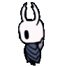

Glossary of Bingy Terms
Click to Navigate this Guide! ▶
The Bingy community has words and abbreviations that are used to refer to different aspects of the game. While knowing these terms is not necessary to play the game, they exist to quickly communicate with other players on the fly, especially in racing situations. You may also hear comms use these terms in tournaments and events, since most comms are experienced bingyers.
The list here is not comprehensive, and may change as the community changes. If you notice I forgot something, please submit it to the suggestion box!
For terms that are more specific to the speedrunning side of the community, but still may be used in bingy, see this pastebin.
General Bingy Terms
Bingy: Vanilla Hollow Knight Bingo.
Board: A bingo board, usually 25 squares, where each square is an action that can be completed in the game.
Early game: The portion of the game from King's Pass to obtaining C-Dash, where most of the activity is prep for goals and obtaining progression, rather than marking goals.
Format: A goal, or "win condition", for completing a bingy.
Hornt: A screenshot of the moment you mark your last goal in Silksong vanilla bingo
Kedge: Kingdom's Edge
Knit: A screenshot of the moment you mark your last goal in Hollow Knight vanilla bingo
Line: A row, column, or diagonal
Majority: The majority of goals on the board, or 13 out of 25. A "win by majority" in lockout also requires all lines for an opponent being blocked.
Prep: Preparation, getting requirements/portions of a goal without actually marking that goal.
Progression: Items, skills, etc. that may not be goals themselves, but are required to reach other goals.
QG: Queen's Gardens
Room: A room in BingoSync that players can join to look at the same board as one another - The password is always "fast".
Rafters: The area in City of Tears outside of Lemm.
Skongy: Vanilla Silksong Bingo.
Sub-50: A very fast time to complete a 3L.
Sub-hour: A fast time to complete a 3L.
Vanilla: A non-randomized game with no additional modded content.
Warp: To use the Benchwarp mod to return to the last bench/hardsave you were at.
Routing & Movement Strategies
Any% Route: Early-game routing inspired by Any% that skips Crossroads Stag and warps out of Claw back to Ancestral Mound.
CG1 Bench Tech: Benching a CG1 before getting C-Dash, typically to leave through Dirtmouth elevator.
Dive Route: Early-game routing involving full-killing False Knight and entering City of Tears from Fungal Wastes to get Dive.
Ilyssa Route: Early-game fungal core routing involving benching at Leg Eater, getting claw, warping, and getting Queen's Station.
Quato Egg Tech: A route for marking 4 rancid eggs early, where you get the egg above lemm, the egg from sly, the entrance egg in peak, and the dark room egg in peak.
Reverse Ilyssa Route: Early-game fungal core routing involving benching at Leg Eater, buying Queens Station stag, warping, getting claw, and heading to City of Tears through City Crest entrance.
Tebbles: True Ending Blue Lake Shade Skip (TEBLSS).
Tuk Egg Tech: Buying rancid eggs from Tuk for progress on 4 eggs and Talk to Tuk.
Uumuu Bench Tech: Benching at Uumuu to visit lower greenpath & queens gardens & fog canyon goals, to leave through Queen's Station stag. Typically done in routes that did not get Queen's Station stag in the early game.
Goals
6 devouts: Kill 6 different Stalking Devouts- Large Deepnest enemies found in the far left of the area, that deal 2 masks of damage and are impervious to attacks from the front.
Bardoon: The NPC in Kingdom's Edge in the tall room near Hornet.
Blue Child Joni: The ghost that appears after picking up Joni's Blessing, walking away from the shrine, and walking back. Joni disappears permanently if you warp out after picking up Joni's Blessing.
Crest/City Elevators: Use City Crest + Ride both CoT large elevators.
CG1: Crystal Guardian (Called "Crystal Guardian 1" in the goal).
CG2: Enraged Guardian (Called "Crystal Guardian 2" in the goal).
Eater Catcher: Soul Eater + Soul Catcher.
Emilitia: The NPC in City of Tears that you reach through leaving Isma's Grove at the top left.
Flowerbug: Give Flower to Elderbug.
Fluke Hermit: The NPC found above Junk Pit, accessible through the dive-locked portion of Royal Waterways.
Gwomb: Glowing womb.
Heavy Steady: Heavy Blow + Steady Body.
Hornet Herrah: Talk to Hornet at CoT Statue + Herrah.
Kings Queens: Unlock Queen's Stag + King's Stag Stations.
Lemm with Crest: Talk to Lemm with Crest Equipped.
Lifeblood Joni's: Lifeblood Heart + Joni's Blessing.
Mask Maker: The NPC off of the room in Deepnest connecting to Queen's Gardens.
Midwife: The NPC below Beast Den in Deepnest.
Poggy Thorax: The ghost hidden behind the rancid egg in Pleasure House.
Shade in Jiji's: Kill your shade in Jiji's Hut.
Sprint Dash: Sprintmaster + Dashmaster.
Stag Frag: Stag Nest vessel fragment.
Thorns Baldur Spore Shroom: Thorns of agony + Baldur Shell + Spore Shroom.
VFKMMC/VKMMC: Vengefly King + Massive Moss Charger.
Item Names
Acid Bridge (relic): The Hallownest Seal in Greenpath in the room below Thorns of Agony.
Any% Journal: the Wanderer’s Journal in City of Tears, above King’s Station.
Autopilot Seal: The Hallownest Seal in West Fog Canyon by Overgrown Mound.
Broken Bridge (relic): Relic in the room bridging Basin and Waterways.
“Come Back Here” relic: The relic located on the left-side of the Marmu’s room in Queen’s Gardens.
Damage Boost (Dboost) seal: The seal in Fog Canyon nearby Crossroads entry. So named because it requires a damage boost when itemless.
Dark Room Egg: Rancid Egg in the dark(ish) room with the bench in lower Crystal Peak.
Dive Journal: The journal in the same room as the shade gate to Markoth (requires Dive).
Entrance Egg: Rancid Egg below the dive entrance to Peak. Can be obtained from below with a background object pogo.
JMV: Journal (above) Mantis Village.
King's Arena: The City vessel fragment arena.
Lemm Egg: Rancid Egg in the room above Lemm.
Paum Journal/Relic: The journal in the room beneath the left side of Shrumal Ogres arena. Named after rando player "Paum" because he is known for reminding other players to check it.
Super Secret Seal The Hallownest Seal located in east Deepnest locked behind either Mantis Lords or Fungal Core.
Wellic: The Hallownest Seal in the well from Crossroads to Dirtmouth. Sometimes referred to as just "well".
Willoh: The Hallownest Seal in Queen's Station, requiring Wings to obtain.
Miscellaneous
AMA: A BingoSync room commonly used in bingy. Link located in a pinned message in #room-links in the Official Bingy discord server.
BingoSync: The website we use for viewing & creating boards, and the mod of the same name which handles board generation & automarking.
Breath of the Wild (BOTW): A BingoSync room commonly used in bingy. Link located in a pinned message in #room-links in the Official Bingy discord server.
Finland: An emoji sometimes used in the Official Bingy Discord server to indicate a neutral preference.
GG: A BingoSync room commonly used in bingy. Link located in a pinned message in #room-links in the Official Bingy discord server.
HKC: The HollowKnightCommunity twitch channel.
Itemsync: A mod that sends items obtained by one player to all other players in their “room”, as well as removing them from those players’ games.
Lumafly: A mod installer that provides easy access to most published mods, including all required mods for rando and add-ons; formerly known as "Scarab+".
Pew/KMSPEW: A BingoSync room commonly used in bingy. Link located in a pinned message in #room-links in the Official Bingy discord server.
Scarab: Another popular mod installer with slightly fewer features, but the same list of mods.
SHO: Small Homothety Organization. (you are here!!! wow!!!!!!)
T1: Tournament 1, a solo lockout tournament.
T2: Tournament 2, a hand-brain lockout tournament.
T3: Tournament 3, a solo lockout tournament.
T4: Tournament 4, a currently ongoing hand-brain lockout tournament.
WGQ: A BingoSync room commonly used in bingy. Link located in a pinned message in #room-links in the Official Bingy discord server.
YQA: A BingoSync room commonly used in bingy. Link located in a pinned message in #room-links in the Official Bingy discord server.
Click to Navigate this Guide! ▶
